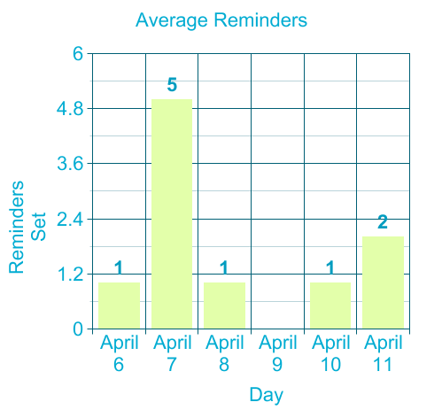

Most (60%) of reminders were about school, the rest were smaller personal reminders of things I want to make sure I remember to do on time or tasks I think I might forget about.

This is an infographic about my use of the Reminders app on my phone. It was created for Graphic Design 2 for the "Me of the Screen" assignment. Hover on each reminder below to reveal the data I collected over a few weeks about how the Reminders app impacts my daily life. If you click on the circular check boxes, alerts pop up!
Average reminders set per day:
Over the few weeks I studied my reminder-setting patterns, I discovered I set an average of2reminders a day. I calculated this by writing a daily log of the reminders I set, then at the end seeing what the daily average was. Some days I set only 1 reminder and a few days I set over 4, but it was usually about 1.
Reminders effect on productivity:
I was noticeably less productive when no reminders were set, though I used work-arounds like other planners (none that reminded me of when to do things, just outlining things that needed to be done). Even with a planner it was hard to stay on track as I find the reminders app helps me most with spreading my tasks throughout the day with specific times. It also has a “punishment/reward” system which is just that it feels good to check things off and bad to see them sitting there in red.
What most reminders were regarding:
Most (60%) of reminders were about school, the rest were smaller personal reminders of things I want to make sure I remember to do on time or tasks I think I might forget about.
How long it took me to complete reminders:
It usually takes 1 hour to a few days to check off a reminder and the significant motivation behind completing the task is the reminder constantly on my screen in red telling me it is late. The average time to complete a reminder is about a few hours. Sometimes I adjust reminders to go off again later if I realise I won’t be able to complete it right away but it isn’t urgent, but I still want to remember to do it later. Primary motivation to change it rather than just leaving it is that it feels stressful to leave the notification there, looming over me.